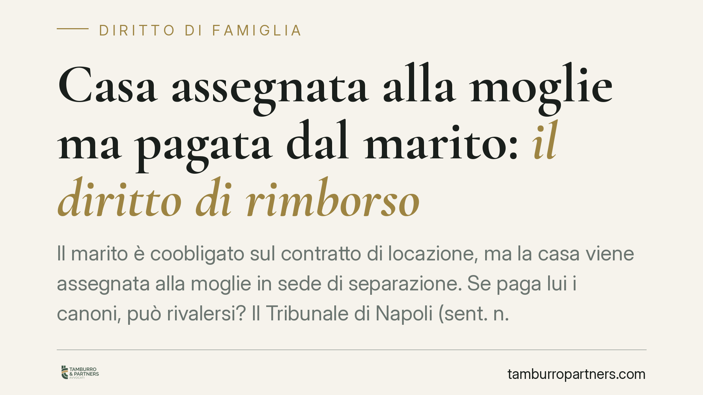

Casa assegnata alla moglie ma pagata dal marito: il diritto di rimborso
Il marito è coobligato sul contratto di locazione, ma la casa viene assegnata alla moglie in sede di separazione. Se paga lui i canoni, può rivalersi? Il Tribunale di Napoli (sent. n. 9028/2026) dice di sì, distinguendo l'obbligo verso il locatore dal rapporto interno tra coniugi. Una pronuncia utile a chi si trova a coprire un debito altrui.

Il caso
Una coppia stipula un contratto di locazione firmato da entrambi i coniugi. In sede di separazione, il giudice assegna la casa alla moglie, insieme al godimento esclusivo dell'immobile. Il marito, però, continua a versare i canoni al proprietario.
La domanda è semplice e frequente: quei soldi restano a suo carico o può chiederli indietro?
Il Tribunale di Napoli, con la sentenza n. 9028/2026, ha riconosciuto al coniuge non assegnatario il diritto al rimborso delle somme pagate, nei limiti della quota che avrebbe dovuto gravare sull'altro.
Inquadramento normativo
La chiave sta nella distinzione tra due rapporti diversi.
Da un lato c'è il rapporto esterno, quello tra i coniugi e il locatore. Se entrambi hanno firmato il contratto, sono coobligati in solido: significa che il proprietario può pretendere l'intero canone da uno solo di loro, indifferentemente (art. 1292 cod. civ.). Il marito che paga tutto, quindi, adempie a un obbligo che verso il locatore è anche suo.
Dall'altro lato c'è il rapporto interno tra i due coniugi. Qui interviene l'art. 1299 cod. civ.: il coobligato che ha pagato l'intero debito può agire in regresso contro l'altro, per farsi restituire la parte che a quest'ultimo competeva. In parole semplici: chi paga per tutti ha diritto a farsi rimborsare la quota degli altri.
Si affianca l'art. 1203, n. 3, cod. civ., sulla surrogazione legale: chi, essendo obbligato con altri, paga il debito, subentra nei diritti del creditore verso i condebitori. È lo strumento tecnico che consente al coniuge solvente di recuperare quanto anticipato.
L'assegnazione della casa non cancella l'obbligo contrattuale verso il locatore, ma incide sul riparto interno: chi gode dell'immobile in via esclusiva è, di regola, tenuto a sopportarne il costo.
Implicazioni pratiche
La pronuncia chiarisce un punto spesso frainteso. L'assegnazione della casa coniugale è un provvedimento che regola il godimento dell'immobile e tutela l'interesse dei figli o del coniuge economicamente più debole. Non riscrive, invece, il contratto di locazione firmato con il proprietario.
Per questo il marito che ha continuato a pagare i canoni non ha perso il proprio denaro. Verso il locatore ha adempiuto correttamente; verso la moglie, che gode dell'immobile in via esclusiva, matura un credito di rimborso.
Attenzione però: il diritto al regresso non è automatico né illimitato. Va provato l'effettivo pagamento (ricevute, bonifici, quietanze) e va verificato cosa dispone il provvedimento di separazione. In alcuni casi il pagamento dei canoni può essere stato espressamente posto a carico di uno dei coniugi, o può rientrare in un accordo economico più ampio (ad esempio a titolo di contributo al mantenimento). In queste ipotesi il rimborso può essere escluso o ridotto.
Rileva anche la titolarità della quota interna: se nulla dispone diversamente, la ripartizione tra coobligati si presume in parti uguali (art. 1298 cod. civ.). L'assegnazione esclusiva sposta il baricentro sul coniuge che effettivamente abita l'immobile.
Cosa fare in concreto
- Conservate ogni prova del pagamento: bonifici, ricevute del locatore, estratti conto. Senza documentazione il credito è difficile da far valere.
- Rileggete il provvedimento di separazione: verificate se il pagamento dei canoni è stato attribuito a uno dei coniugi o inserito in un accordo economico complessivo.
- Distinguete i due rapporti: verso il locatore restate obbligati; il rimborso si chiede all'altro coniuge, non al proprietario.
- Formalizzate la richiesta: prima di agire in giudizio, inviate una richiesta scritta di rimborso, che interrompe la prescrizione e documenta la vostra posizione.
- Valutate la tempistica: i crediti di regresso sono soggetti a prescrizione. Non lasciate trascorrere anni prima di attivarvi.
La vicenda mostra come separazione e contratti conservino logiche autonome. Districarle richiede attenzione al testo dei provvedimenti e alla documentazione dei pagamenti.
Disclaimer
Contributo informativo a cura di Tamburro & Partners - Avv. Giuseppe Tamburro. Non costituisce parere legale.
Ogni famiglia ha il suo equilibrio.
Separazione, divorzio, affidamento, assegno: se vuoi un confronto riservato su una specifica situazione, scrivi allo studio. Ti rispondiamo entro un giorno lavorativo.